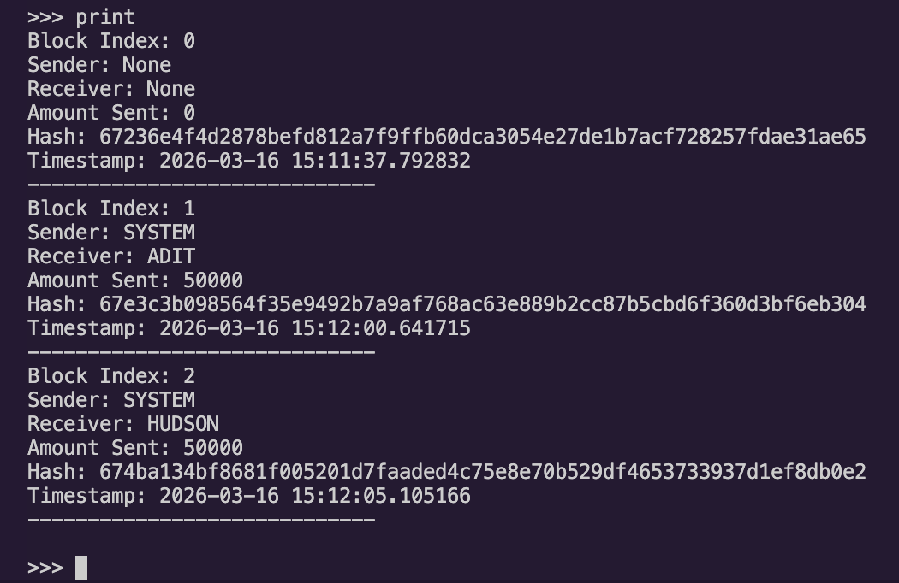
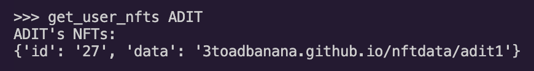

NFTs X metaphysics

This project was the final project for our junior seminar, CS302: The Why Behind Everyday Technologies, with Prof. Jean Salac at Carleton College. The task is to explain an everyday technology, to build a prototype of it and lead an interdisciplinary class-wide discussion, combining the technical aspects with a branch of philosophy assigned to us. The topic of our project is NFTs and the branch of philosophy is Metaphysics.
What are NFTs?If you somehow missed the whirlwind of the early 2020s, NFTs, or Non-Fungible Tokens are digital tokens stored on the blockchain, used as a certificate of ownership/authenticity.
As Oxford Languages defines the term, fungible is an adjective that means "replaceable by another identical item; mutually interchangeable." Cash is fungible: you can exchange one $10 bill for two $5 bills, and they inherently have the same value. NFTs don't play by those rules: each one of them has a unique identifier and value, not inherently the same as any other.
NFTs are governed by smart contracts: pieces of code that live on the blockchain and run each time an NFT is part of a transaction. The security, anonymity, transparency, and authenticity that blockchain promises is what makes NFTs so appealing, and what captured the imagination of everyone who partook in the NFT market in the early 2020s.
Applications of NFTs Our PrototypeWe built a naive, local blockchain where we could explore and demonstrate how NFTs behave on the blockchain. Phe blockchain was built in Python and the metadata for the NFTs was hosted on Github Pages for convenience. Here is a link to the repository.
We defined simple python classes for each component of the system: user, nft, block, and of course, the blockchain. We wrote a command-line interface wrapper that enabled a real-time demo of the program as well.

For simplicity and ease of explanation, each block contained only transaction. Our blockchain was constructed with industry-level standards as well: it used the SHA-256 hash function, implemented mining difficulty by hash iteration, and provided NFT metadata hosting on external storage (Github Pages).


dNFTs & The Ship of TheseusThe Ship of Theseus is a classic metaphysics thought experiment. Over his voyage, Theseus must replace parts of his ship as needed. First a plank, then another, and then maybe the sails. Eventually, the ship consists of entirely parts: the parts from when Theseus set out on his journey have been replaced. If those 'original' parts are then found and put together into another ship, which ship is the original ship?
We compared this to dNFTs (Dynamic NFTs). dNFTs are tokens that modify their associated asset based on external factors. For example, the NBA's "The Association" collection was an NFT drop for the 2022 season. Each player card would update based on player and team performance. The token remained the same; the asset changed over time.


Applying this model of understanding to the Ship of Theseus, we can argue that the ship at the end of the journey, with all the replaced parts is the 'original' ship. The token stays the same; the asset changes. Similarly, the semantic relationship (Theseus's Ship) stays the same and the physical parts of it change. At each stage of replacement, the ship was the original ship. Each new part was at some point part of the original ship. Applying the dNFT model allows us to debunk the false dichotomy of the original question.
What does it mean to own something? Tangible & Physical vs Digital Works CitedOxford Languages. (n.d.). In Oxford Languages Dictionary. Retrieved March 14, 2026 from https://www.google.com/search?q=fungible